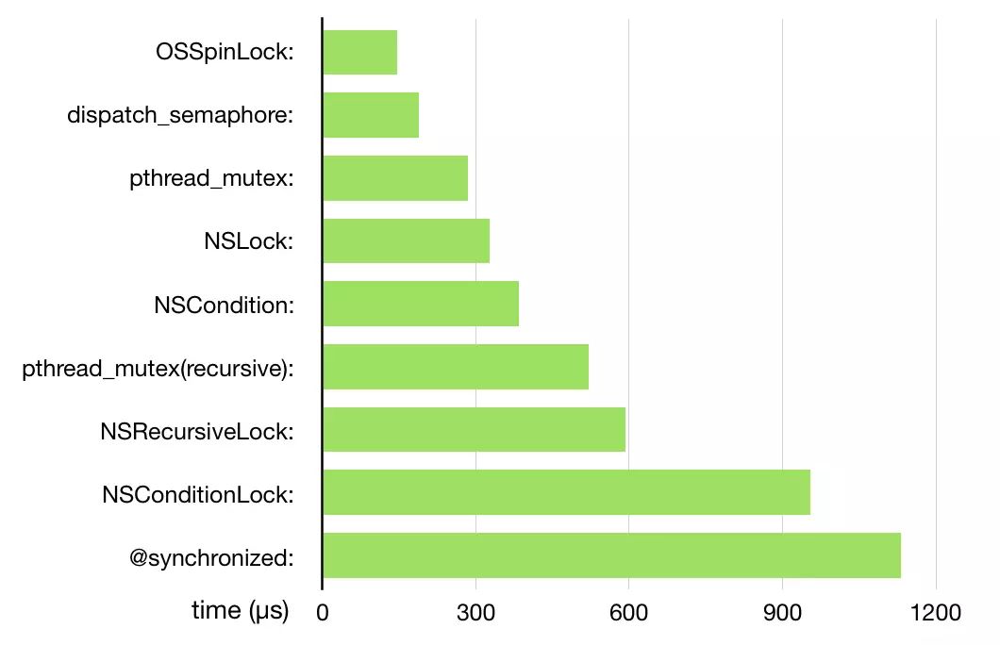

【Jan】Lock in iOS & OSX
目标：
- iOS下锁的各种使用姿势+性能对比
iOS下的各种锁的姿势
先来借用YY大神的一组性能对比：

OSSpinlock：
- 自旋锁：如果锁没有释放就不停的循环尝试获取锁
- API：
OS_SPINLOCK_INIT： 默认值为 0,在 locked 状态时就会大于 0，unlocked状态下为 0 OSSpinLockLock(&oslock)：上锁，参数为 OSSpinLock 地址 OSSpinLockUnlock(&oslock)：解锁，参数为 OSSpinLock 地址 OSSpinLockTry(&oslock)：尝试加锁，可以加锁则立即加锁并返回 YES,反之返回 NO
os_unfair_lock
- 用于取代OSSpinlock
- 互斥锁，非自旋锁，但性能极高
#import <os/lock.h> //静态初始化 os_unfair_lock lock = OS_UNFAIR_LOCK_INIT; //加锁 os_unfair_lock_lock(&lock); bool isCanLock = os_unfair_lock_trylock(&lock); //解锁 os_unfair_lock_unlock(&lock);
pthread_mutex_t
- 通常意义上的互斥锁
static pthread_mutex_t pLock;pthread_mutex_init(&pLock, NULL); //1.线程1 dispatch_async(dispatch_get_global_queue(DISPATCH_QUEUE_PRIORITY_DEFAULT, 0), ^{ NSLog(@"线程1 准备上锁"); pthread_mutex_lock(&pLock); sleep(3); NSLog(@"线程1"); pthread_mutex_unlock(&pLock);}); //1.线程2 dispatch_async(dispatch_get_global_queue(DISPATCH_QUEUE_PRIORITY_DEFAULT, 0), ^{ NSLog(@"线程2 准备上锁"); pthread_mutex_lock(&pLock); NSLog(@"线程2"); pthread_mutex_unlock(&pLock);});
pthread_mutex_t(recursive)
- 前面的锁在加锁后只能有一个线程访问该对象，后面的线程需要排队，并且 lock 和 unlock 是对应出现的，同一线程多次 lock 是不允许的，而递归锁允许同一个线程在未释放其拥有的锁时反复对该锁进行加锁操作。本质上这个是pthread_mutext_t的一种可选特性。
static pthread_mutex_t pLock; pthread_mutexattr_t attr;pthread_mutexattr_init(&attr); //初始化attr并且给它赋予默认 pthread_mutexattr_settype(&attr, PTHREAD_MUTEX_RECURSIVE); //设置锁类型，这边是设置为递归锁 pthread_mutex_init(&pLock, &attr);pthread_mutexattr_destroy(&attr); //销毁一个属性对象，在重新进行初始化之前该结构不能重新使用 //1.线程1 dispatch_async(dispatch_get_global_queue(DISPATCH_QUEUE_PRIORITY_DEFAULT, 0), ^{ static void (^RecursiveBlock)(int); RecursiveBlock = ^(int value) { pthread_mutex_lock(&pLock); if (value > 0) { NSLog(@"value: %d", value); RecursiveBlock(value - 1); } pthread_mutex_unlock(&pLock); }; RecursiveBlock(5);});
pthread_cond_t
- 当当前线程进入 wait 之后， 当前线程 mutex 会放开，保证其他线程可以拿到锁 mutex 执行，直到收到 signal 信号或者broadcast之后才会唤醒 当前线程，并且 唤醒后再次对 mutex 进行加锁。
//条件锁
pthread_cond_t cond;
//静态初始化
pthread_cond_t cond2 = PTHREAD_COND_INITIALIZER;
pthread_condattr_t condAttr;
//初始化attr参数
pthread_condattr_init(&condAttr);
//动态初始化，也可不传attr参数
pthread_cond_init(&cond, &condAttr);
pthread_cond_init(&cond, NULL);
//1.放开当前锁 2.使当前线程进入休眠(wait) 3.唤醒后会再次mutex程加锁
即：当线程调用pthread_cond_wait()函数时，会将调用线程放到等待条件的线程列表上，并原子的对互斥量解锁（这样就不会死锁）。当pthread_cond_wait()返回时，互斥量再次锁住。
pthread_cond_wait(&cond, &mutex);
//在time之前等待，之后放开锁。
pthread_cond_timedwait(&cond, &mutex, const struct timespec *restrict _Nullable);
//唤醒一个被wait的线程
pthread_cond_signal(&cond);
//唤醒所有被wait的线程
pthread_cond_broadcast(&cond);
//销毁attr 和cond
pthread_condattr_destroy(&condAttr);
pthread_cond_destroy(&cond);pthread_rwlock_t
- 读写锁,(互斥锁的进化)分为读锁(rlock)和写锁(wlock),可以有多个线程共同持有读锁，但是写锁只能有一个线程持有，如果读锁被持有是，写锁是不能持有的。需要等待读锁unlock 才能持有写锁,同样需要写锁unlock才能持有读锁。
//静态初始化
pthread_rwlock_t lock = PTHREAD_RWLOCK_INITIALIZER;
_rwlock = lock;
//动态初始化
pthread_rwlockattr_init(&_rwlock_attr);
pthread_rwlock_init(&_rwlock, &_rwlock_attr);
- (void)__add {
//写锁上锁
pthread_rwlock_wrlock(&_rwlock);
[super __add];
pthread_rwlock_unlock(&_rwlock);
}
- (void)__readArr {
//读锁上锁
pthread_rwlock_rdlock(&_rwlock);
NSLog(@"self.lockArr=%@",self.lockArray);
pthread_rwlock_unlock(&_rwlock);
}
- (void)dealloc {
//销毁 锁 & 锁的属性
pthread_rwlockattr_destroy(&_rwlock_attr);
pthread_rwlock_destroy(&_rwlock);
}
/*
* Mutex type attributes
*/
#define PTHREAD_MUTEX_NORMAL 0
#define PTHREAD_MUTEX_ERRORCHECK 1
#define PTHREAD_MUTEX_RECURSIVE 2
#define PTHREAD_MUTEX_DEFAULT PTHREAD_MUTEX_NORMALNSLock
- Cocoa 互斥锁
NSLock *lock = [NSLock new];//线程1
dispatch_async(dispatch_get_global_queue(DISPATCH_QUEUE_PRIORITY_DEFAULT, 0), ^{
NSLog(@"线程1 尝试加速ing...");
[lock lock];
sleep(3);//睡眠5秒
NSLog(@"线程1");
[lock unlock];
NSLog(@"线程1解锁成功");});
//线程2
dispatch_async(dispatch_get_global_queue(DISPATCH_QUEUE_PRIORITY_DEFAULT, 0), ^{
NSLog(@"线程2 尝试加速ing...");
BOOL x = [lock lockBeforeDate:[NSDate dateWithTimeIntervalSinceNow:4]];
if (x) {
NSLog(@"线程2");
[lock unlock];
}else{
NSLog(@"失败");
}});NSCondition
- Cocoa 封装的pthread_cond_t
wait：进入等待状态
waitUntilDate:：让一个线程等待一定的时间
signal：唤醒一个等待的线程
broadcast：唤醒所有等待的线程NSRecursiveLock
- cocoa封装的pthread_mutex recursive
@synchronized - 使用最简单的锁，但是有性能问题，慎用
- 背后的设计参考这篇文章 http://rykap.com/objective-c/2015/05/09/synchronized/
NSConditionLock
NSConditionLock *cLock = [[NSConditionLock alloc] initWithCondition:0];
//线程1
dispatch_async(dispatch_get_global_queue(DISPATCH_QUEUE_PRIORITY_DEFAULT, 0), ^{
if([cLock tryLockWhenCondition:0]){
NSLog(@"线程1");
[cLock unlockWithCondition:1];
}else{
NSLog(@"失败");
}});
//线程2
dispatch_async(dispatch_get_global_queue(DISPATCH_QUEUE_PRIORITY_DEFAULT, 0), ^{
[cLock lockWhenCondition:3];
NSLog(@"线程2");
[cLock unlockWithCondition:2];});
//线程3
dispatch_async(dispatch_get_global_queue(DISPATCH_QUEUE_PRIORITY_DEFAULT, 0), ^{
[cLock lockWhenCondition:1];
NSLog(@"线程3");
[cLock unlockWithCondition:3];});